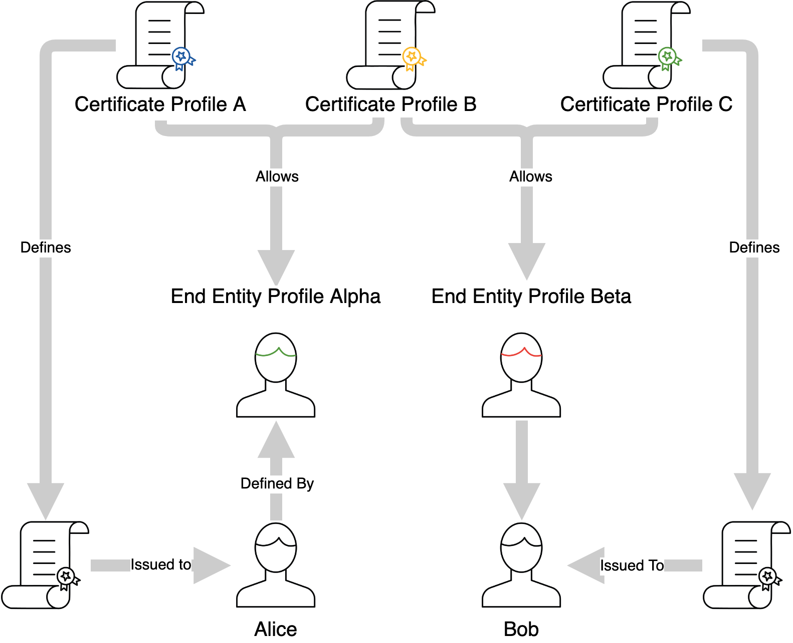

EJBCA Concepts
The following lists definitions for general and EJBCA specific concepts and key terms. EJBCA implements the Certification Authority (CA) part of a Public Key Infrastructure (PKI) according to standards such as X.509 and IETF-PKIX. As such it follows the general PKI concepts closely. The administration of the PKI has some EJBCA specific concepts in order to implement unique flexibility.
PKI Architecture
First of all, we need to establish some general terms in order to continue.
For more information on PKI architectures, see EJBCA Architecture.
Root CA
A RootCA has a self-signed certificate and is also called Trusted Root. Verification of other certificates in the PKI ends with the RootCAs self-signed certificate. Since the RootCAs certificate is self-signed it must somehow be configured as a trusted root for all clients in the PKI.
Sub CA
A subordinate CA, or SubCA for short, is a CA whose certificate is signed by another CA, which can be another SubCA or a RootCA. Since the SubCAs certificate is signed by another CA, it does not have to be configured as a trusted root. It is part of a certificate chain that ends in the RootCA.
Registration Authority (RA)
A Registration Authority (RA) is an administrative function that registers entities in the PKI. The RA is trusted to identify and authenticate entities according to the CAs policy. There can be one or more RAs connected to each CA in the PKI.
Validation Authority (VA)
A Validation Authority (VA) is responsible for providing information on whether a certificate is currently valid or not. The VA does not issue or revoke certificates, but it validates certificates by providing a list of revoked certificates for a CA, known as a Certificate Revocation List (CRL). Another method that the VA can support is the Online Certificate Status Protocol (OCSP). It is a real-time lookup of a certificate status, compared to the CRL which is generated on a set schedule. The VA can respond to OCSP requests and reply if a certificate is good, revoked, or unknown. There can be one or more VAs connected to each CA in the PKI.
Certificate Related Concepts
Certification Authority (CA)
A Certification Authority (CA) issues certificates to and vouches for the authenticity of entities.
The term CA may refer to the entire PKI organization, to an instance of EJBCA defined as a CA, or to an individual CA created on an instance of EJBCA, of which there may be many. The latter is generally the way the term is referenced in this documentation.
The level of trust you can assign to a CA is individual, per CA, and depends on the CAs Policy (CP) and CA Practices Statement (CPS).
For more information, see Certificate Authority Overview.
End Entity
An End Entity is a user of the PKI, like a device, person, or server. It is called the End Entity because in a hierarchy of certificates in the PKI, it is always the end point, since it is not authorized to issue any certificates of its own.
The End Entity individual or device requests a certificate from the CA or RA. One End Entity can hold many certificates, but all of these certificates will have the same identifying values (Subject DN, Subject Alternative Name, etc).
Keep in mind that an End Entity should not be confused with a physical person. From a CA's point of view, an End Entity may be a physical user, but in reality, it is any entity that holds a certificate. This could also be an OCSP Signer or a Sub CA.
Each End Entity is enrolled against one and only one CA, which will be known as the issuer of that End Entity's certificates.
For more information, see End Entities Overview.
End Entity Profile
End Entity Profiles define templates for End Entities. An End Entity Profile isn't inherently necessary as EJBCA provides a default profile (named Empty) which provides no constraints, but for almost all PKIs it's useful and often necessary to put some constraints on what values that users may use to enroll for an End Entity. The values defined in End Entity Profiles are those that pertain to the End Entity directly, and by extension into the identifying fields in the certificate except for data regarding keys and signatures, which will be defined in the Certificate Profiles. The typical values defined, besides available Certificate Profiles and available CAs, will be identifying values such as Subject DN (country, organization, common name, etc) and Subject Alternative Names (SAN) such as dnsName.
Values defined in End Entity Profiles can be pre-set (not modifiable during enrollment), set with a default value but still modifiable, unset but critical (meaning that they have to be filled in during enrollment) or completely optional. End Entity Profiles can be made as specific or as general as you wish, so it may cover everything from a specific End Entity to an entire set. Each End Entity uses exactly one profile, but the same profile may be shared amongst many End Entities.
For more information, see End Entity Profiles Overview.
Certificate Profile
A Certificate Profile is used to configure certain content and constraints of certificates, such as certificate extensions, available algorithms, key sizes, etc. Basically, it describes what an issued certificate is going to be constrained to.
The certificate extensions allow you to define if a specific extension is present and whether it is critical or not. Some extensions are populated with a value, where it is the same value for all certificates such as CRLDistributionPoint. For other extensions only the presence is determined, where the value is user- or cert-specific such as SubjectAlternativeName. Here is also determined if these certificates will be published and with which publisher.
The number of available CAs are defined in both the End Entity and Certificate Profiles, and this is due to the generic nature of each of these templates. In order for a CA to issue a certificate for an End Entity, it must be present in both profile types. When an End Entity is given a choice of CA's from which to have its certificate issued from, the intersection of the available CAs in each profile type will be presented.
Certificate Profiles are used in multiple places. They're selected in the CA configuration in order to define the nature of certificates of the CA's own keys:
Likewise, several can be picked when configuring an End Entity Profile:
The Certificate Profile defined for the CA will not affect the certificates issued to End Entities by that CA - these certificates will instead be defined by the Certificate Profiles chosen in the End Entity Profiles:

Certificate Profiles are meant to be generically defined and shared amongst different End Entity Profiles, meaning that End Entities different enough to warrant separate End Entity Profiles can share the same Certificate Profile. In addition End Entity Profiles can also define several Certificate Profiles, allowing a single End Entity a choice between different types of certificates to have issued to it, alternatively to have several different types of certificates issued. Each certificate is defined by one and only one certificate profile.
For more information, see Certificate Profiles Overview.
Internal Concepts
Crypto Token
The term Crypto Token comes from use in HSMs, where the crypto token is the part of a slot on the Hardware Security Module (HSM) which contains that slot's cryptographic keys. This concept is mirrored in EJBCA, in which a Crypto Token is a representation of a set of cryptographic keys which may be protected by a password, and may be activated or deactivated as a whole. Crypto Tokens come in two flavors
Soft Crypto Tokens which are stored in the database as PKCS#12 files protected by a password
PKCS#11 Crypto Tokens which are stored inside an HSM, and are accessed through the PKCS#11 API.
If no HSM is available and defined, PKCS#11 Crypto Tokens will not be available in the UI.
Each CA has one and only one Crypto Token, though several CAs could share the same Crypto Token.
Additionally, Crypto Tokens are also used for other constructs in EJBCA which require the use of cryptographic keys:
In OCSP Signers in order to sign OCSP responses.
In Authentication Key Bindings in order for instances of EJBCA to communicate over TLS.
Likewise, OCSP Signers and Authentication Key bindings each use one and only one Crypto Token, though several may share the same one.
For more information, see Crypto Tokens Overview.
Publishers
A publisher stores issued certificates to a central location. EJBCA has implemented support for LDAP and Active Directory but it's also possible to create customized plug-ins.
Internal Key Binding
An Internal Key Binding can be used to make keys in a Crypto Token available for other uses than in a CA. It is a reference to a key pair available to the EJBCA instance, a non-CA certificate, an optional list of trusted certificates and properties for its purpose. It can be thought of as a simplified key store with purpose-specific properties. For example, an OcspKeyBinding can be used to sign OCSP responses on behalf of a CA. It has a key in an HSM accessible from the EJBCA instance (via a Crypto Token) and an OCSP signing certificate. Additionally, the trusted certificates can be used to verify that OCSP requests are sent from a trusted source and additional properties can be used to specify how long an OCSP response should be valid.
Peer Connector
A Peer Connector is a representation of a remote (EJBCA or EJBCA compatible) peer system and can be used for automated management of the remote system. A proprietary protocol is used over a dual authenticated HTTPS channel (where the client certificate keys can be stored in an HSM).Example: If one EJBCA instance (acting as CA) is given sufficient authorization at another EJBCA instance (acting as VA), the first can publish certificate revocation information to the second instance or perform automatic renewal of OCSP signing keys and certificates over the secure channel.
External RA
ENTERPRISE This is an EJBCA Enterprise feature.
In some cases, for security reasons, is it preferable to deny all in-bound traffic to the CA and instead let the CA periodically fetch and process information from external trusted data sources. For this reason, there is an add-on module provided with the EJBCA Enterprise distribution called externalra, which is short for External RA API.
Protocols
EJBCA supports the following protocols:
Online Certificate Status Protocol (OCSP)
OCSP is used by PKI clients to verify the validity of certificates in real-time. OCSP is defined in RFC 6960 and RFC 5019.
Certificate Management Protocol (CMP)
CMP is an Internet protocol used for obtaining X.509 digital certificates in a public key infrastructure (PKI). It is described in RFC4210 and is one of two protocols to use the Certificate Request Message Format (CRMF), described in RFC4211.
Enrollment over Secure Transport (EST)
EST is a standardized certificate enrollment protocol that describes an X.509 certificate management protocol. EJBCA supports the EST protocol as defined in RFC7030.
Simple Certificate Enrollment Protocol (SCEP)
SCEP is a protocol commonly used by network equipment to enroll for certificates. SCEP has in general use been supplanted by the similar Enrollment over Secure Transport (EST) protocol, which we recommend as an alternative.
Automatic Certificate Management Environment (ACME)
ACME is a protocol that a Certificate Authority (CA) and an applicant can use to automate the process of verification and certificate issuance.